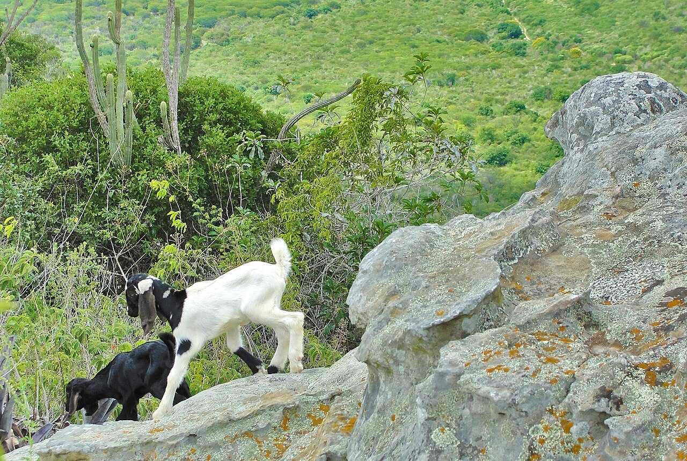

SLM Technology · Silvopastoral

Raleamento
Selective thinning of the Caatinga to release the grass layer

Goats browse the managed Caatinga – the standing dry forest as pasture. Photo: Vitoriano Jr., CC BY-SA 3.0, via Wikimedia Commons
What it is
Raleamento is the selective removal of woody plants from native Caatinga to cut shade and let the herbaceous (grass and herb) layer establish for grazing – keeping about 400 trees per hectare (around 40 percent canopy) and never using fire (Araújo Filho, 2013). It suits sites with a real herbaceous potential.
How it works
- Cut selectively in the dry season, keeping forage, deep-rooted and timber species
- Never use fire at any stage
- Cut back the regrowth (roço) mid next wet season; let animals browse the rest
- Admit animals only after the herb seeds have set
- Harvest at most 60 percent of the available forage; protect riparian strips (Araújo Filho, 2013)
Key facts
- Available forage
- ~6× untreated Caatinga
- Live-weight gain
- up to +800% per ha/yr
- Drought-year loss
- ~22% (vs ~80% untreated)
- Profitable above
- ~30 kg live-weight/ha/yr
- Best for
- cattle, goats, sheep
Figures from Araújo Filho (2013).
Note
Not every site responds to thinning. Assess the herbaceous potential first; where it is poor, choose coppicing or enrichment instead.
WOCAT classification
- Measures
- VMVegetative · Management
- WOCAT group
- Natural and semi-natural forest management
- Degradation addressed
- Biological degradation
Classified per the WOCAT SLM-Technologies classification.
✦Source and links
- • Araújo Filho, J. A. de – Manejo pastoril sustentável da Caatinga (MMA)
- • DRIP Manual 01 – Caatinga fodder
- • Caatinga · sustainable management
Source (APA, 7th ed.).
- Araújo Filho, J. A. de. (2013). Manejo pastoril sustentável da Caatinga. Projeto Dom Helder Câmara. PDF